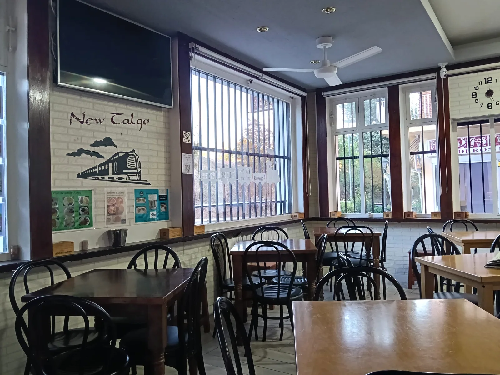
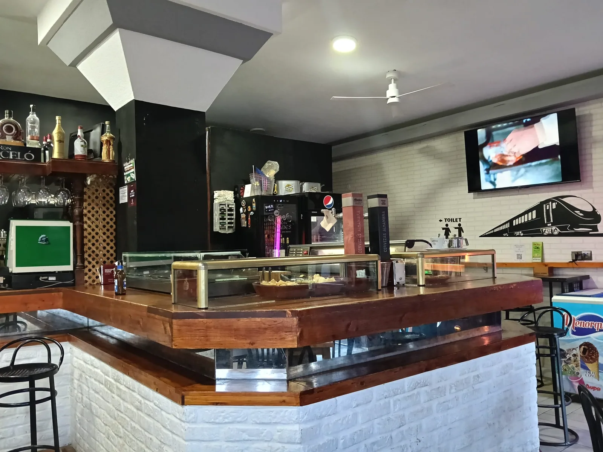
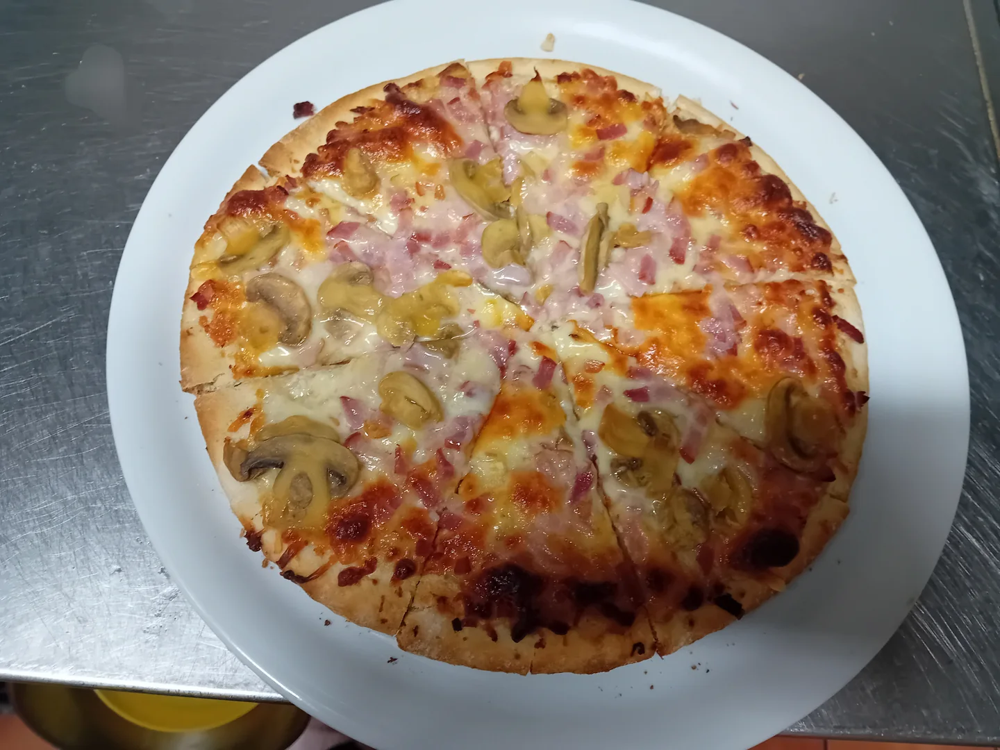
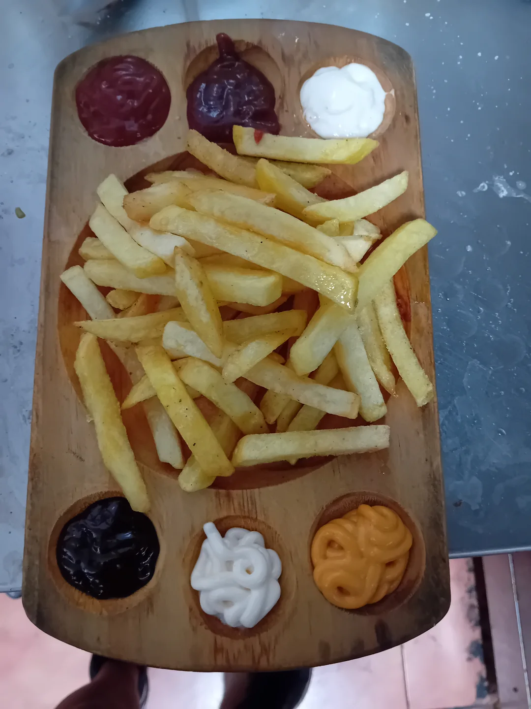
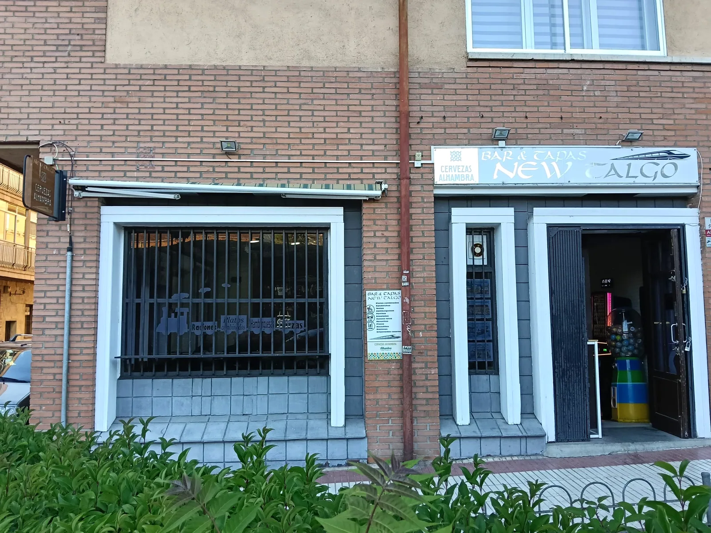

UN BAR PARA HACER UNA PAUSA
NEW
TALGO
Tu mesa en Segovia, junto a la estación. Entra, elige algo de la carta y quédate un rato.
Aquí se viene
a estar a gusto.
New Talgo es un bar de Segovia para sentarse a comer, compartir unas tapas o hacer un alto en el camino. La barra y las mesas forman parte de la vida diaria del local.
Conoce dónde estamos
Elige lo que
te apetezca.
Tapas, bocadillos, pizzas y platos combinados. Toda la carta reunida para que encuentres tu próxima elección.


Una mesa, una charla,
un rato más.
Así es New Talgo por dentro y por fuera. Fotografías del local real, sin decorados ni escenas prestadas.
Nos vemos
en Segovia.
Carretera de Villacastín 14, junto a la estación convencional. La entrada da directamente a la calle.
Abierto martes a domingo, 11:30–23:30 · Lunes cerrado.
Horario de reservas: comidas 11:00–14:30 y cenas 19:00–22:00.
